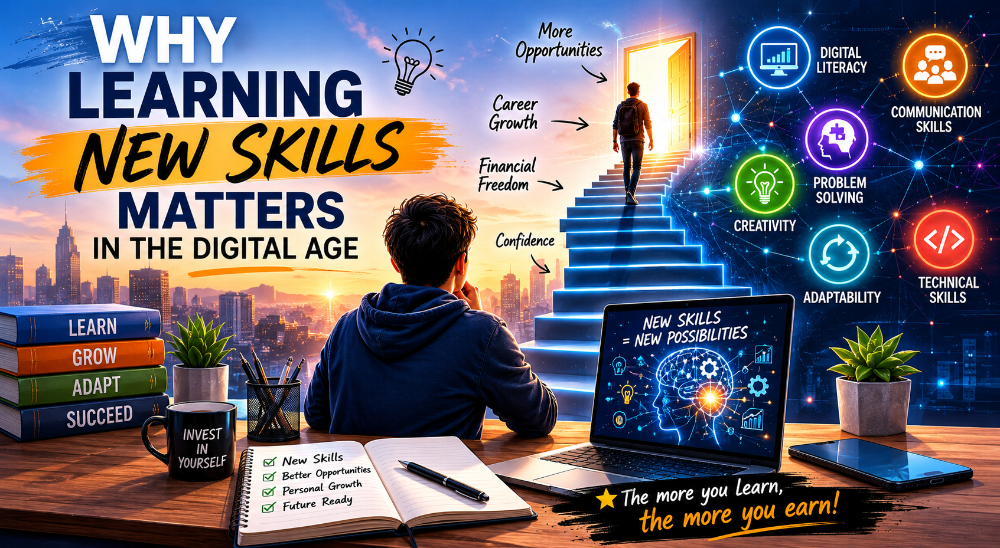

Why Learning New Skills Matters in the Digital Age

The digital age has transformed the way we live, learn, and work. New technologies emerge every year, creating opportunities that were unimaginable just a decade ago. In this environment, one of the most valuable investments anyone can make is learning new skills.
Learning is no longer limited to traditional education. Today, knowledge is available through online courses, tutorials, blogs, videos, and communities. Anyone with determination and internet access can acquire valuable skills and build a brighter future.
One of the most important lessons I have learned is that skills create opportunities. Whether it is web development, writing, graphic design, marketing, or artificial intelligence, every skill has the potential to open new doors. The more skills we develop, the more adaptable and confident we become.
Technology is evolving rapidly, and those who continue learning are better prepared for future challenges. Continuous learning improves problem-solving abilities, boosts creativity, and increases professional growth. It also helps individuals stay competitive in an increasingly digital world.
Another benefit of learning new skills is personal development. Every new challenge teaches patience, discipline, and resilience. Even when progress seems slow, consistent effort leads to meaningful results over time.
For students and young professionals, developing digital skills can be especially valuable. Skills such as communication, content creation, programming, and digital marketing are becoming increasingly important in many industries.
The future belongs to those who are willing to learn, adapt, and grow. Every small step taken today contributes to bigger opportunities tomorrow. No matter where you start, the journey of learning can transform your future and unlock possibilities beyond imagination.
The best time to start learning is today. Every new skill is an investment in yourself, and every lesson learned brings you one step closer to your goals.